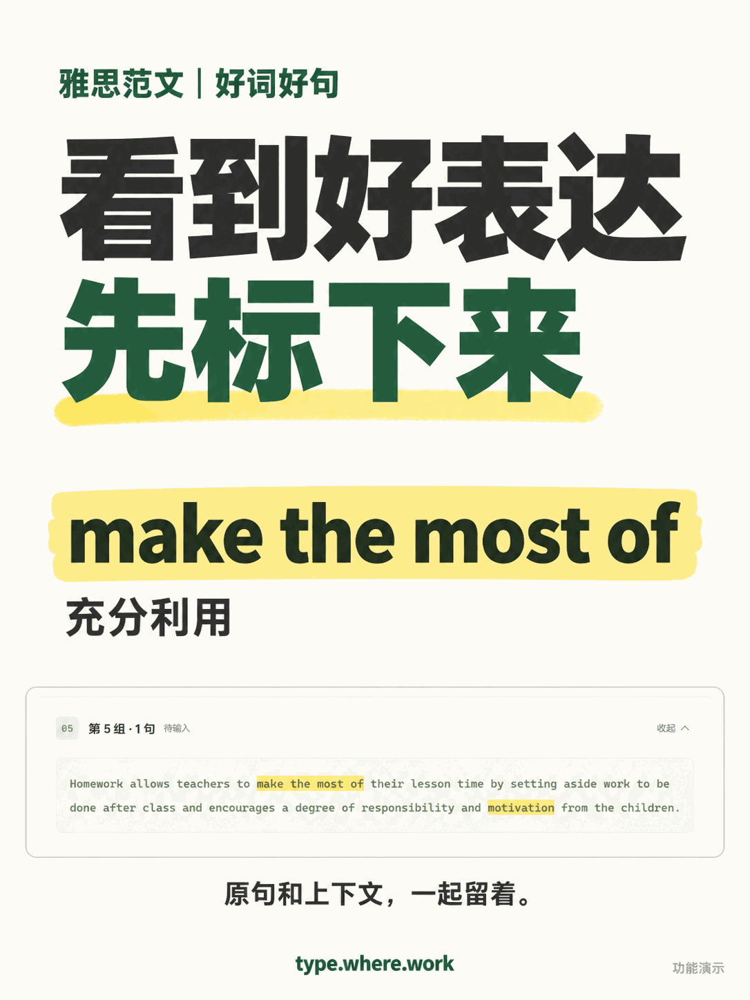

1 / 2实际功能截图辅助合成的演示配图。标记保存在当前浏览器，不随账号同步。
把好表达留在原文里
雅思范文里的好表达，可以直接标黄啦
又给自己的雅思小网站加了个小功能：好词好句可以标黄啦🟨
读到想留的词、搭配或句子，选中，再点「标记好词好句」🔖
标记留在原文里，连上下文一起看。
刷新后也还在，想取消就重新选中、点「取消高亮」👌
（标记保存在当前浏览器）
你们看范文，习惯标黄还是另抄一本？👀
#雅思写作 #雅思范文 #雅思作文 #雅思打字练习 #雅思词汇 #雅思备考